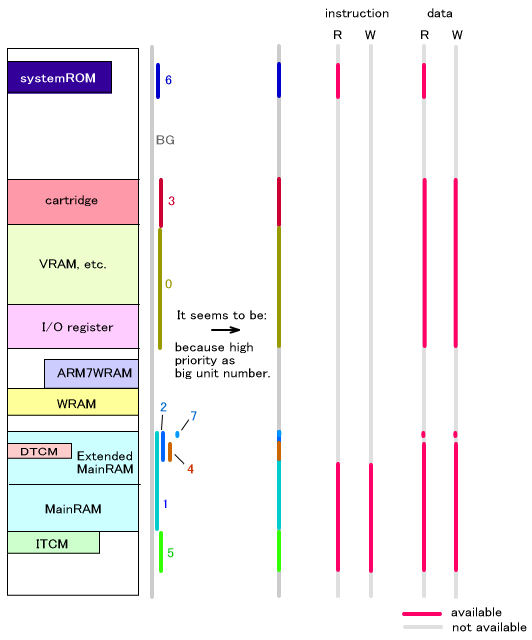
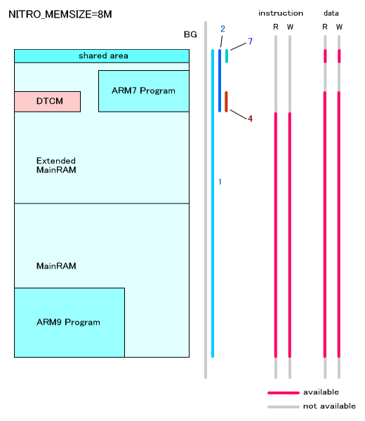
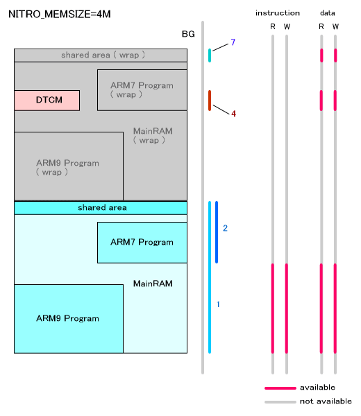

Protection units are a feature used for setting the usage status of the memory read/write attributes and the cache/write back, and for protecting the memory. Eight regions can be mapped in the memory space, and different attributes can be configured for each.
Protection units can only be used on the ARM9 processor.
Enabling and Disabling Protection Units
The functions below enable or disable the protection units.
OS_EnableProtectionUnit()
OS_DisableProtectionUnit()
Settings for Each Region
The following functions perform each of the protection region settings:
OS_SetProtectionRegion()
OS_SetProtectionRegionParam()
The following functions get the settings:
OS_GetProtectionRegionAddress()
OS_GetProtectionRegionSize()
OS_GetProtectionRegionParam()
Default Mapping
By default, each region is mapped as indicated below.
When the regions overlap, the higher region number has priority.
| Region Number | Usage | base address | Size | Cache | Write Buffer | User Attribute (Command) | User Attribute (Data) |
|---|---|---|---|---|---|---|---|
| - | Background | 0x00000000 | 4GByte ( 0x100000000 ) |
Å~ | Å~ | NA | NA |
| 0 | I/O register , VRAM, etc. | HW_IOREG |
64MByte ( 0x400000 ) |
Å~ | Å~ | R/W | R/W |
| 1 | Main Memory | HW_MAIN_MEM_MAIN ( 0x02000000 ) |
4M / 8MByte (Caution 1) ( 0x400000/0x800000 ) |
ÅErsaquo; | ÅErsaquo; | R/W | R/W |
| 2 | ARM&-Exclusive | HW_MAIN_MEM_MAIN_END/HW_MAIN_MEM_SUB ( 0x23E0000/0x27E0000 ) (Caution 2) |
128KByte ( 0x20000 ) |
Å~ | Å~ | NA | NA |
| 3 | Game Pak | HW_CTRDG_ROM ( 0x08000000 ) |
128MByte ( 0x8000000 ) |
Å~ | Å~ | NA | R/W |
| 4 | DTCM | HW_DTCM ( 0x027E0000 ) (Caution 3) |
16KByte ( 0x4000 ) |
Å~ | Å~ | NA | R/W |
| 5 | ITCM | HW_ITCM_IMAGE ( 0x01000000 ) (Caution 4) |
16MByte ( 0x100000 ) |
Å~ | Å~ | R/W | R/W |
| 6 | BIOS Reserved | HW_BIOS ( 0xFFFF0000 ) |
32KByte ( 0x8000 ) |
ÅErsaquo; | Å~ | R | R |
| 7 | Shared Main Memory | HW_MAIN_MEM_SHARED ( 0x027FF000 ) |
4KByte ( 0x1000 ) |
Å~ | Å~ | NA | R/W |
(CAUTION 1)
When operating on debugger, the size of protection region 1 (used to protect the main memory) becomes 8MByte by calling OS_EnableMainExArena() before OS_InitArena() and OS_Init(). For the actual device, it will always be 4MByte regardless of the setting described above.
For compatibility with previous versions, the size of protection region 1 will be 8MByte (when operating on debugger) instead of the above specification if you compile OS library set to NITRO_MEMSIZE=8M.
(CAUTION 2)
If the size of Protection Region 1 is 4MB, then the starting address of protection region 2 that protects the ARM7 region will be 0x23E0000. If it is 8MB, then the starting address will be 0x27E0000.
(CAUTION 3)
The starting position of the DTCM is specified by the lsf file. The default value is 0x027E0000.
(CAUTION 4)
Since accessing a NULL pointer will cause an exception, do not start from 0x00000000.
(CAUTION)
For TEG, the start address HW_MAIN_MEM_SUB of protection region 2 is 0x2780000, and the size is 512Kbytes. The DTCM start location defaults to 0x02780000, and the start address of protection region 4 is 0x0280000.
A graphical representation of the default mapping follows:

An enlarged representation of the main memory and expanded memory regions is shown below. The default region setting for this area can be toggled between main memory size settings of 8 MB and 4 MB.

An Overview of OS Functions (Protection Units)
04/13/2005 Changed ARM7 reserved/DTCM region addresses
12/14/2004 Revised wording
11/17/2004 Initial version
CONFIDENTIAL